Labour Supply 1: Individual Attachment to the Labour Market
EC306- Wages and Employment
Justin Smith
Wilfrid Laurier University
Winter 2026

Goals of This Section
Goals of This Section
Introduce common labour market concepts
Build the labour supply model
Derive labour supply curve
Examine effects of labour market policies within that model
Key Labour Force Concepts
Introduction
The labour market involves several individual decisions about work
- It is not simply whether to work or not
In the news you hear about statistics that quantify these decisions
In this section we cover the most common ones
Labour Force Participation
The first decision is whether to make yourself available for work
Labour Force: people in the eligible population who participate in labour market activities as either employed or unemployed
- A measure of the people that could work or are working
Eligible population includes
Population 15 years and over
Non-institutionalized
People not living on reserve
Civilians (non-military)
Labour Force Participation
Eligible people who are not part of the labour force include
Retired people
People who do only unpaid work in the home
Full time students (who are 15 years old and over)
People who just give up on looking for work
Labour Force Participation Rate (LFPR): The share of the eligible population (POP) in the labour force (LF)
\[ LFPR = LF/POP \]
- The LFPR is a common statistic reported in the news
Labour Force Participation

Labour Force Participation

Employment and Unemployment
People in the labour force are either employed or unemployed
Employed (E): people who worked during the reference period
- Includes people normally employed but temporarily absent
Unemployed (U): people who did not work during the reference period but
- were available for work and actively looked for work in the past four weeks
- were waiting to start a new job within the next four weeks
- on temporary layoff and expecting to be recalled to that job
The employment rate (ER) and unemployment rate (UR) are
\[ER = E/POP\] \[UR = U/LF\]
Employment and Unemployment

Employment and Unemployment

Labour Force Hierarchy

Hours Worked
Individuals decide not only whether to work or not, but how intensively
Some people work full time, some work part time
Work arrangements can be flexible
“Gig” jobs and remote work have increased that flexibility
Recent data show
Almost half of men work full time hours
About 1/4 of women work full time hours
Hours Worked

Labour Supply Model
Introduction
In this section we introduce a model we use throughout the course
The model helps us understand how individuals make decisions about work
Based on utility maximization as you saw in EC270
Individual choose between two goods
- Consumption of goods and services
- Leisure
Choices are constrained by time, wage rate, and non-labour income
There are a few wrinkles that make this market unique
Preferences
Individuals have preferences over consumption (C) and leisure (L)
People like consuming goods and services
Also like having non-work time
- Includes fun activities but also non-work tasks like chores, education, etc.
The tradeoffs people are willing to make between C and L are represented by indifference curves
- At every point along the curve the individual is equally happy
- Curves further from the origin represent higher levels of utility
Preferences
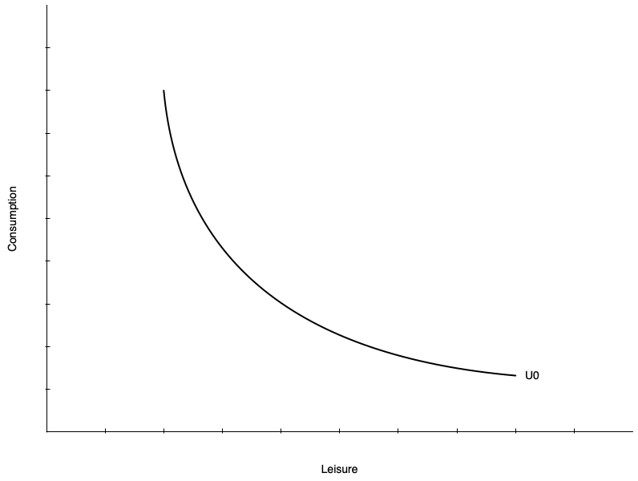
On the left is a single indifference curve
Any point represents equal utility (\(U_{0}\))
Marginal Rate of Substitution (MRS): the rate at which a person is willing to trade consumption for leisure while remaining equally happy
The MRS is the slope of the indifference curve at a point
Individuals have diminishing MRS
Willing to give up less consumption for additional leisure the more leisure they already have
Slope gets shallower with more leisure
Preferences
Indifference curves do not have to be smooth curves like the one shown
Could be straight lines
Means the tradeoff between consumption and leisure is constant
Willingness to trade away leisure for consumption does not depend on leisure
Could be “L” shaped
- Consumption and leisure must be consumed in fixed proportions
Mostly we will deal with smooth preferences
Preferences
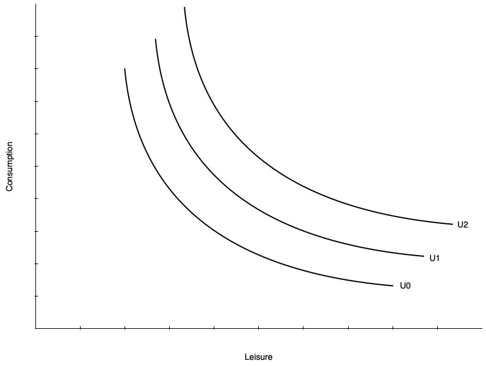
Utility increases with curves further from the origin
- \(U_{2} > U_{1} > U_{0}\)
Constraints
Individuals do not choose consumption and leisure bundles on preference alone
They are constrained by their budget
The budget is determined by
The wage rate
Total number of hours available
Non-labour income
Budget constraint is also called
Potential income constraint
Full income constraint
Constraints
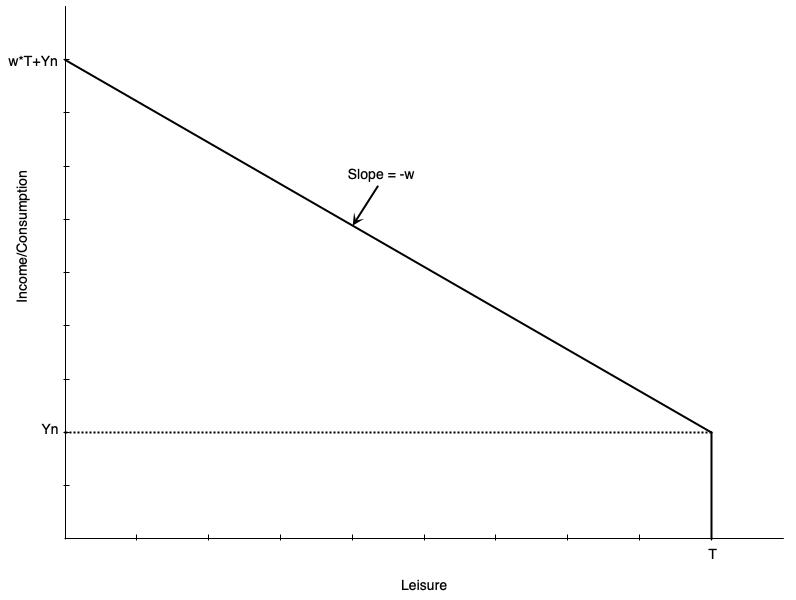
Graph shows a linear budget constraint
Assume no saving, so consumption = income
There are \(T\) total hours to allocate to work or leisure
Individual earns \(Y_{n}\) non-labour income
- Earned even with zero work hours (full leisure hours)
Each hour worked gets wage of \(w\)
Person working \(T\) hours (no leisure) earns \(wT+Y_{n}\) income
- Called “full income”
Constraints
- Mathematically, the budget constraint is
\[C = w(T - L) + Y_{n}\]
Consumption is equal to income from working \((w(T - L))\) plus non-labour income \((Y_{n})\)
The slope of the budget constraint is \(-w\)
The opportunity cost of leisure is the wage rate
Each hour of leisure means one less hour worked, which means \(w\) less income
Someone who works zero hours has \(T\) leisure hours and \(Y_{n}\) consumption
Someone who works \(T\) hours has zero leisure hours and \(wT + Y_{n}\) consumption
Constraints
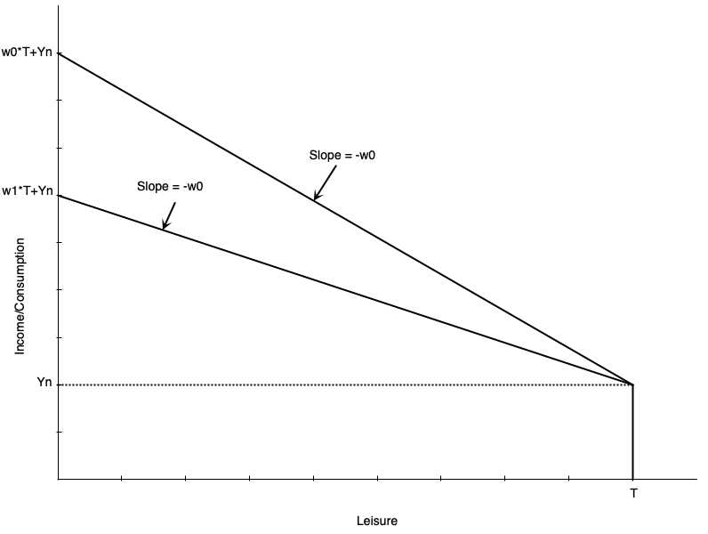
Slope is the negative of the wage rate \(w\)
A lower wage means shallower slope
If \(w_{1} < w_{0}\), the budget line swivels down
They intersect at leisure = \(T\) because there are no work hours
Lower wage also means full income is lower
- Working all hours leads to less total labour earnings
Constraints
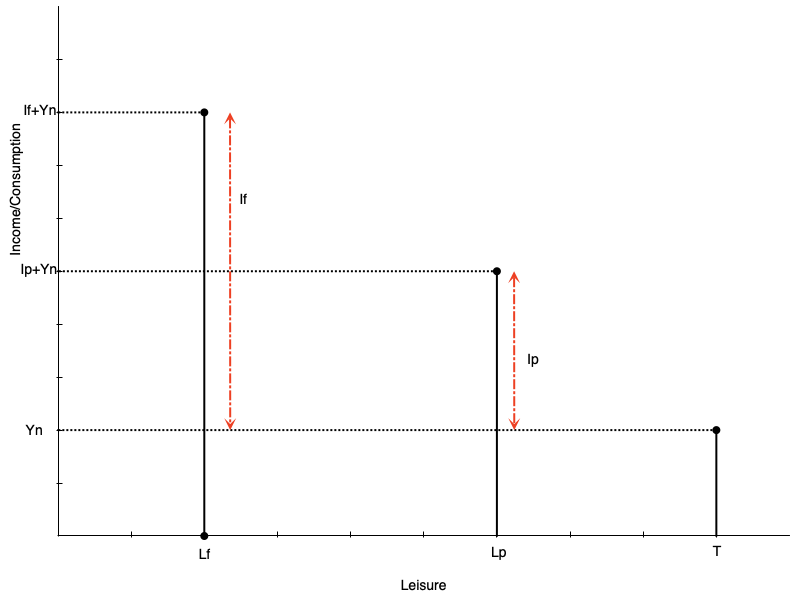
- Often people cannot adjust their work hours freely
- They make only be able to work full time or part time
- Budget constraint is no longer a line, but a set of points
- Suppose an individual chooses part time work
- Work hours are \(h_{p} = T-L_{p}\)
- Labour earnings are \(I_{p} = w*h_{p}\)
- Total consumption (and income) is \(C_{p} = I_{p} + Y_{n}\)
Constraints
- A person working full time hours
- Work hours are \(h_{f} = T-L_{f}\)
- Labour earnings are \(I_{f} = w*h_{f}\)
- Total consumption (and income) is \(C_{f} = I_{f} + Y_{n}\)
- In theory wage could also be different for full time work
Consumer Optimum
- Work hours are chosen using the combination of preferences and constraints
- The consumer optimum is the point that maximizes utility subject to the budget constraint
- The optimum occurs where the budget constraint is tangent to an indifference curve
- There are two possibilities for the optimum
- Non-participation: optimum occurs at the end of the budget constraint (full leisure)
- Participation: optimum occurs at an interior point (some leisure, some work)
- Model also defines the reservation wage
- Lowest wage rate at which a person will choose to work
Consumer Optimum
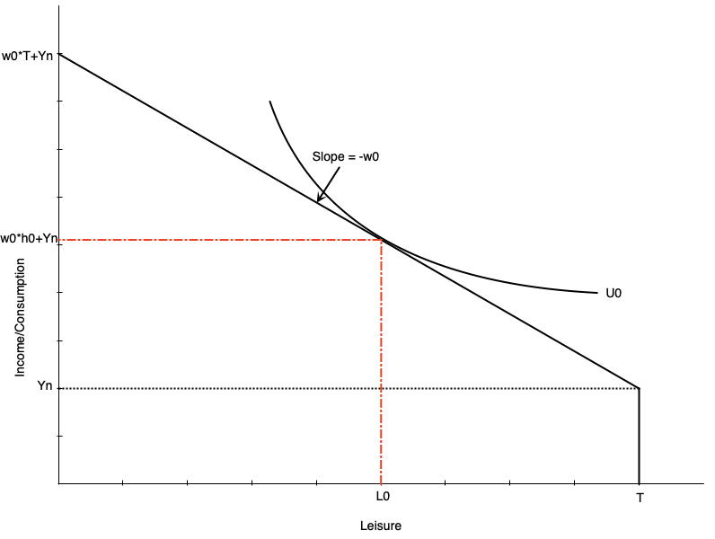
Graph shows an optimum with participation
Optimum is where indifference curve is tangent to budget constraint
At the optimum, MRS = wage rate
- Willingness to trade leisure for consumption (MRS) equals ability to trade them (wage)
Optimal work hours are \(h_{0} = T - L_{0}\)
Optimal consumption is \(C_{0} = W_{0}h_{0}+Y_{n}\)
Consumer Optimum
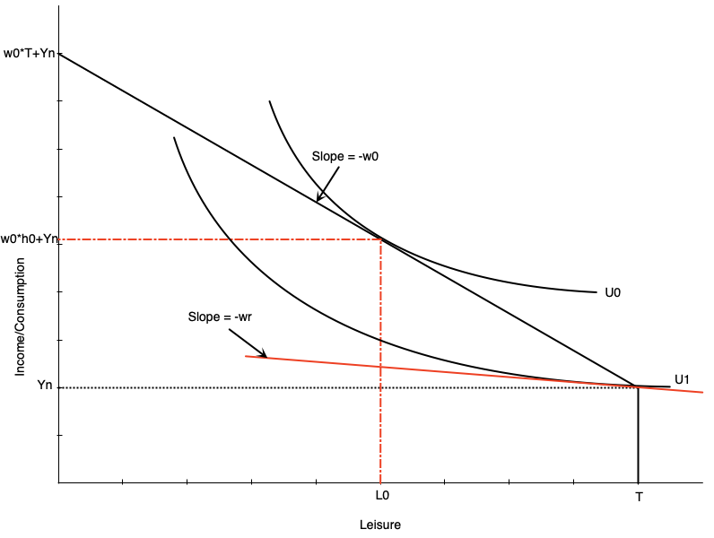
The reservation wage is the lowest wage at which a person will choose to work
It occurs where the budget constraint is tangent to the indifference curve at full leisure
- At that point, MRS = reservation wage
If the wage is any lower, the person will choose not to work
If it is any higher, they will work positive hours
The red line shows the hypothetical reservation wage
- In this case, it is \(w_{r}\)
Consumer Optimum
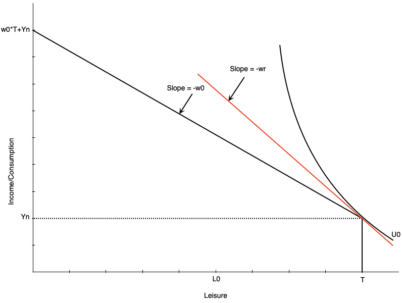
Graph to the left shows a non-participation optimum
The slope of the indifference curve is steeper than the budget constraint at full leisure
- The extra consumption you want from one less hour of leisure (MRS) is more than you can get from working an hour (wage)
So your optimal choice is to not work at all
Indifference curve touches the budget constraint at the kink
Notice the wage \(w_{0}\) is lower than the reservation wage \(w_{r}\)
Comparative Statics
Introduction
The model can be used to predict how changes in the environment affect work decisions
Changes could be to the wage or non-labour income
Often these arise because of policy changes
- Introduction or increase in welfare payment
- Wage subsidy
- Tax credits
- Employment insurance
- Child care
We can examine these change with our model
Increase in Non-Labour Income
Suppose that individuals receive an increase in non-labour income
- Could be from a government transfer program
How does this affect optimal work hours?
Depends on whether leisure is a normal or inferior good
Normal good: leisure increases when non-labour income increases
Inferior good: leisure decreases when non-labour income increases
Generally economists think of leisure as normal
Increase in Non-Labour Income
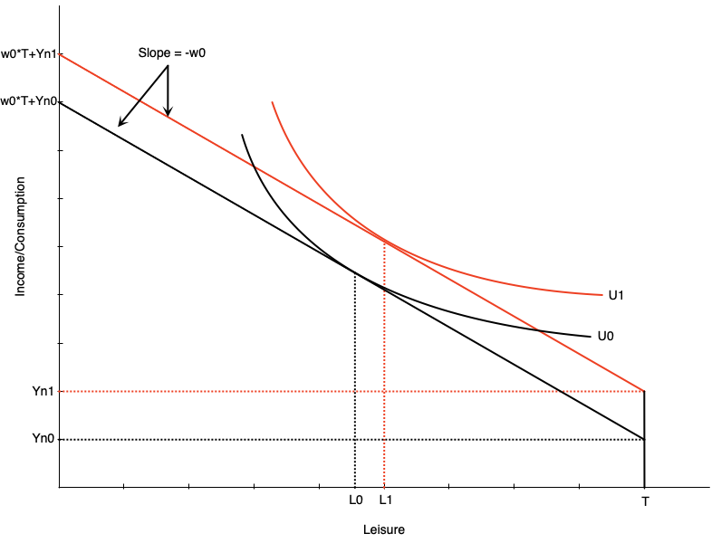
Graph shows an increase in non-labour income from \(Y_{n0}\) to \(Y_{n1}\)
Budget line shifts up vertically but parallel
- No change in slope because wage is the same
-If leisure is a normal good, optimal leisure increases from \(L_{0}\) to \(L_{1}\)
Means work hours decrease by the same amount
Consumption also increases
This illustrates a pure income effect
- Increases in income increase demand for normal goods
Increase in the Wage
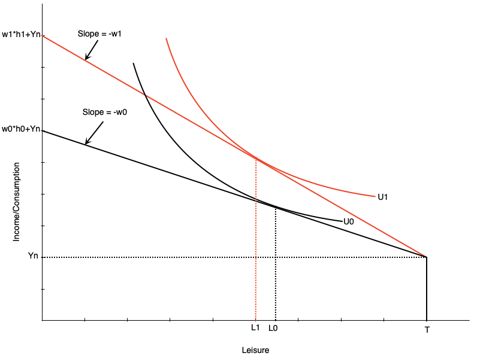
If the wage changes, the budget constraint pivots
In graph to the left, the wage increases from \(w_{0}\) to \(w_{1}\)
The slope becomes steeper
Full income also increases because working all hours earns more
Graph is drawn such that leisure falls from \(L_{0}\) to \(L_{1}\) at the new wage rate
There are two effects underlying this change
Substitution effect
Income effect
Increase in the Wage
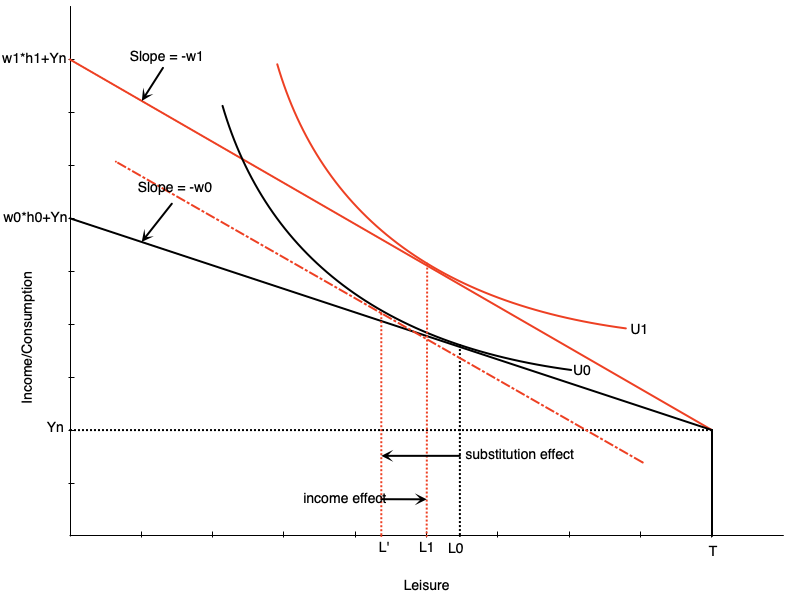
Substitution Effect: change in leisure when wage changes but utility is held constant
When wage increases, leisure becomes more expensive
People substitute away from leisure and towards consumption
To measure this, draw a hypothetical budget line with the new slope but tangent to the original indifference curve
Difference in leisure measures substitution effect
Increase in the Wage
Income Effect: change in leisure when income changes but wage is held constant
When wage increases, workers become richer at same hours of work
Want to consume more of all normal goods
To measure this, move from hypothetical budget line to new budget line
Difference in leisure measures income effect
Increase in the Wage
The income and substitution effects move in opposite directions
For a wage increase
Substitution effect encourages more work (less leisure)
Income effect encourages less work (more leisure)
The overall effect on work hours depends on which effect is stronger
Graph on the left shows a stronger substitution effect
Increase in the Wage
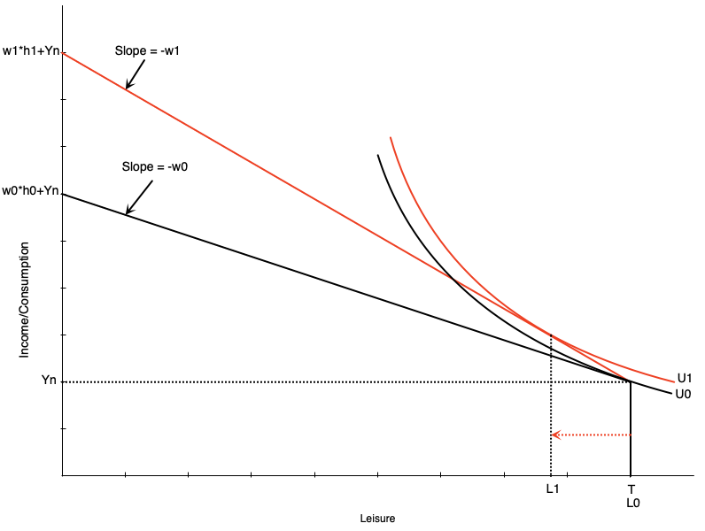
Changing the wage can also affect participation
Recall that workers do not work if the wage is below their reservation wage
If an increase in the wage moves it above the reservation wage, they will start working
Graph to the right shows how this would happen
The Individual Labour Supply Curve
The labour supply curve shows the relationship between the wage rate and hours worked
It is derived from the consumer optimum at different wage rates
We will see that the labour supply curve can be backward bending
It is upward sloping when the substitution effect is stronger
It is downward sloping when the income effect is stronger
The curve tends to bend backwards at higher wage rates
The Individual Labour Supply Curve
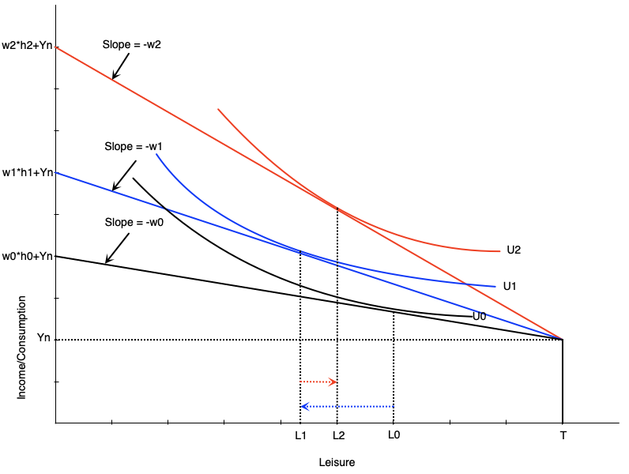
Suppose wage goes from \(w_{0}\) to \(w_{1}\) to \(w_{2}\)
At \(w_{0}\), work hours are \(h_{0} = T - L_{0}\)
At \(w_{1}\), work hours increase to \(h_{1} = T - L_{1}\)
- substitution effect stronger
At \(w_{2}\), work hours decrease to \(h_{2} = T - L_{2}\)
- income effect stronger
The Individual Labour Supply Curve
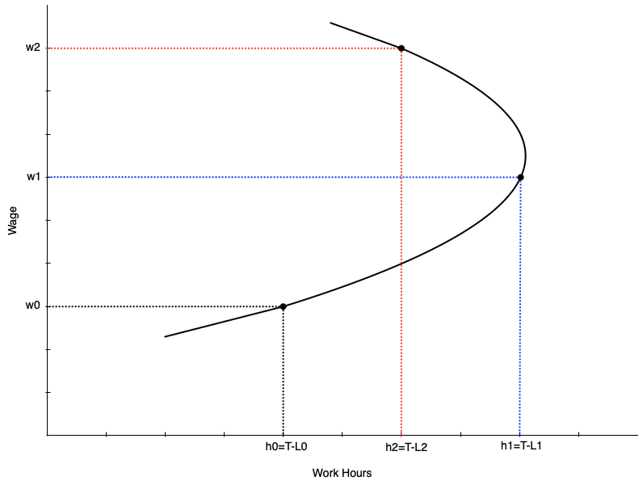
Summary
We have used the labour supply model to examine changes in the wage
For people participating, wage changes alter leisure and work hours
If the wage goes up then
- Work hours go up if the substition effect is strongest
- Work hours go down if the income effect is strongest
For non-participants, a wage increase can induce them to enter the labour force
- If the wage goes above their reservation wage
The labour supply curve maps different wages to work hours
It slopes up at lower wages, but can bend backwards at higher wages
Empirical Evidence
Introduction
There are many labour economists working on evidence of these theories
We will look at a few examples of empirical evidence on labour supply
First we look at evidence on participation
- The extensive margin of labour supply
- Many studies look specifically at married women
Then at evidence on work hours
- The intensive margin of labour supply
Participation
Table below shows participation rates for married women
Broken down by age, children, education, spousal income
Each of these demographic factors are related to wage
- e.g. higher education -> higher wage
We expect to see that where wage is higher, participation is also higher
This is not a perfect way to examine this relationship
- There could be other related factors that drive participation
Participation

Elasticity of Labour Supply
The elasticity of labour supply is the percentage change in labour supply from a 1% change in the wage
Measures how responsive work hours are to changes in the wage
There are different ways of measuring elasticity
Uncompensated Elasticity: measures total change in work hours from a wage change
- Includes both income and substitution effects
- Effect is theoretically ambiguous
Compensated Elasticity: measures change in work hours after removing income effect
- Isolates the substitution effect
- Should be positive
Elasticity of Labour Supply

Elasticity of Labour Supply
Table above shows summary of uncompensated and compensated elasticities from different studies
Separates by gender
- We might expect men and women to respond differently to wage changes
- Women potentially have more flexibility in work hours and respond more
Table shows uniformly inelastic labour supply
Elasticity less than 1 in absolute value
A 1% increase in wage leads to roughly 0.1% to 0.3% change in work hours
Compensated elasticity is positive
- Women respond more to wage changes
Income effect is generally negative or small
Applications
Introduction
We can use the model to analyze various situations faced by workers
In this section we will look at
- Changes in family income (added worker effects)
- Discouraged workers
- Moonlighting (holding multiple jobs)
- Overtime
- Flex work
The list is not exhaustive
In the next chapter we will look at government policies
Added Worker Effect
The added worker effect occurs when a negative income shock to a family leads to increased labour supply from secondary earners
- e.g. husband loses job, wife enters labour force or increases work hours
Explicitly considers the family unit rather than treating labour supply as purely individual
Spousal income is treated as a person’s non-labour income
In the model we can look at what happens when this amount falls
Added Worker Effect
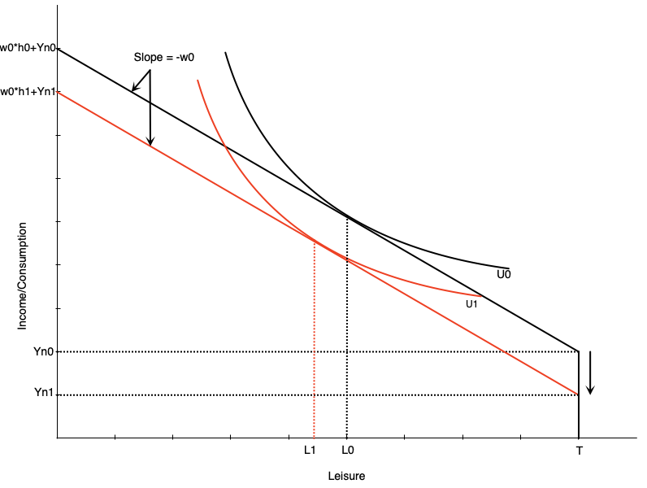
When non-labour income falls, the budget constraint shifts down
If leisure is a normal good, optimal leisure falls from \(L_{0}\) to \(L_{1}\)
Work hours increase from \(h_{0}\) to \(h_{1}\)
Means that the spouse increases work hours to compensate for lost family income
Added Worker Effect
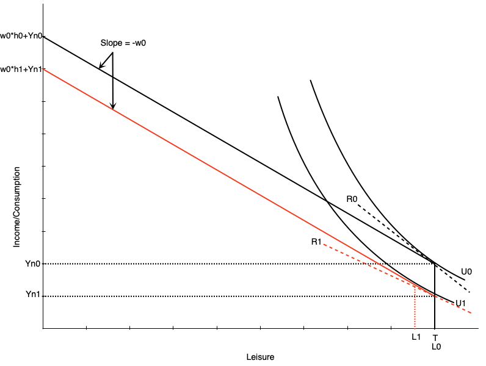
If the spouse was not already working, the fall in income can induce participation
Happens because the fall in income reduces the reservation wage
- If the wage is now above the reservation wage, they will start working
Graph to the left shows how this happens
The slope if reservation wage \(R_{1}\) is smaller than \(R_{0}\) after the drop in non-laboir income
Person enters the labour market in response because wage is now above reservation wage
Hidden Unemployment
We discussed a problem with the unemployment rate in that it does not include discouraged workers
Discouraged workers: people who could work but have given up looking and dropped out of the labour force
Our model can explain this behaviour
In bad times, the wage falls
If the wage falls below a person’s reservation wage, they will drop out of the labour force
Hidden Unemployment
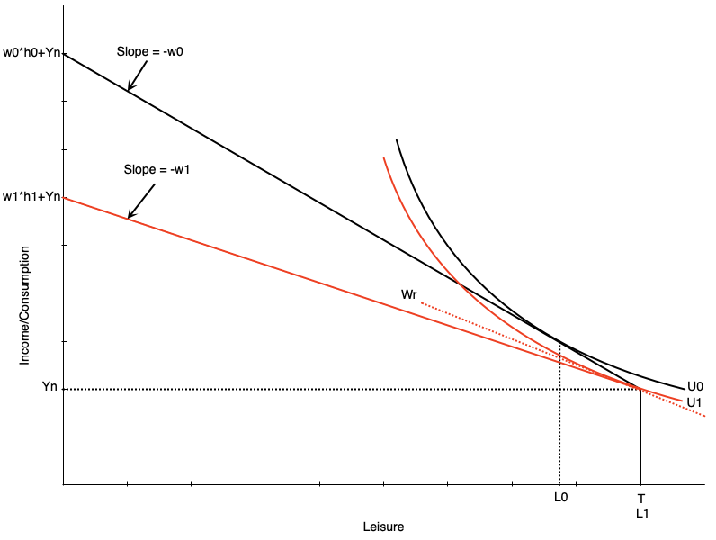
Graph shows worker initially working positive hours
Wage falls from \(w_{0}\) to \(w_{1}\)
\(w_{1}\) is below the reservation wage \(w_{r}\)
- The person will drop out of the labour force
Now use all their time for leisure
- Consume non-labour income \(Y_{n}\)
Moonlighting
Moonlighting: working additional jobs at night or on weekends
- Bit of an old term where main jobs were generally 9-5
- Extra work occured after that
- In 2025 secondary jobs can happen at any time
Happens when people have a fixed hours constraint
- Example: working full time, but wishing to work longer
- People with fixed hours can be underemployed
People may take a second job, possibly at a lower wage
Moonlighting
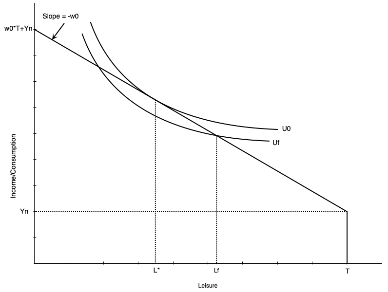
In this graph people ideally would work \(h^* = T-L^*\) hours
- Maximizes utility subject to budget constraint
Can only work \(h_f = T- L_f\) hours at their main job
- Employer does not allow more hours
This puts them on a lower indifference curve \(U_f\)
The outcome is not optimal
Moonlighting
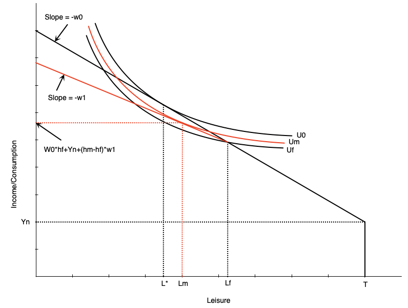
Now imagine they can take a second job at a lower wage rate
The budget constraint pivots out from the fixed hours point
Beyond those hours, the wage falls
Allows worker to access higher utility curve
They can increase hours worked
But not as much as if they could extend hours in main job
Overtime
Sometimes people are working too much at the main job
Also happens with a fixed hours constraint
- People want to work less at given wage
- Employer does not allow less hours
- They are overemployed
At given wage they cannot maximize utility subject to constraints
Overtime
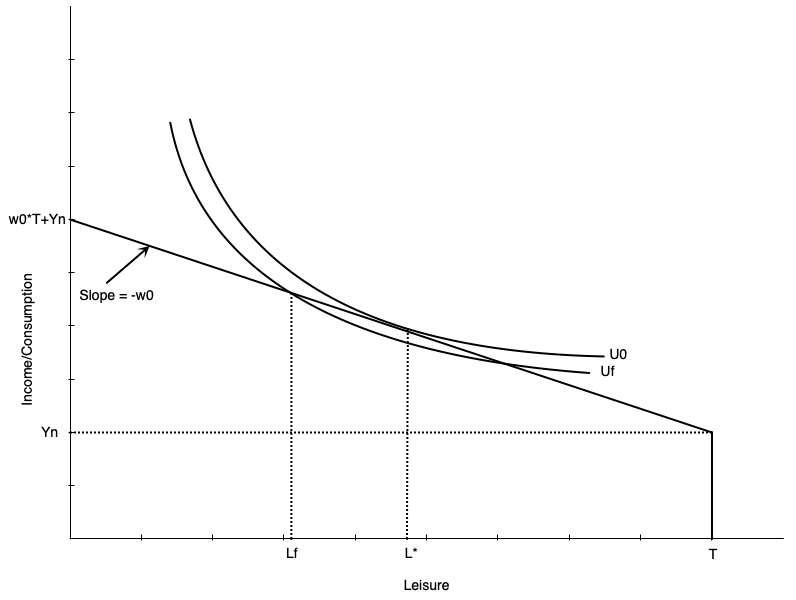
In this graph, people would ideally work \(h^* = T-L^*\) hours
- Maximizes utility subject to budget constraint
But employer requires them to work \(h_f = T- L_f\) hours
- Employer does not allow fewer hours
Puts them on a lower indifference curve \(U_f\)
The outcome is not optimal
Overtime
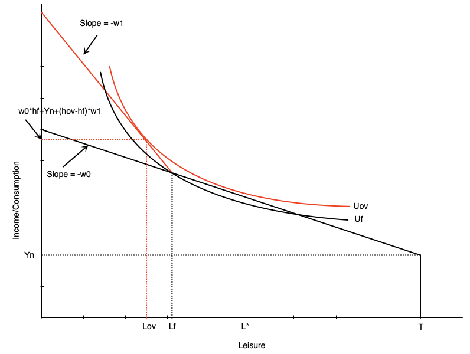
If the employer offers overtime wages, the budget constraint pivots out from the fixed hours point
- Beyond those hours, the wage increases from \(w_{0}\) to \(w_{1}\)
Allows worker to access higher utility curve
Also increases hours worked even though they are initially overemployed
- The higher wage induces a substitution effect to work more
- There is a small income effect that only applies to the extra hours
Overtime
An alternative to overtime is for the firm to just pay more for all hours
- Makes sense for a firm if they are constantly paying overtime
That does not generate the same optimal work hours as overtime pay
- Income effect is larger with straight time equivalent
- Becauses wage increase applies to all hours worked
- In overtime, income effect only applies to extra hours worked
Worker chooses to less with straight time equivalent pay
Overtime
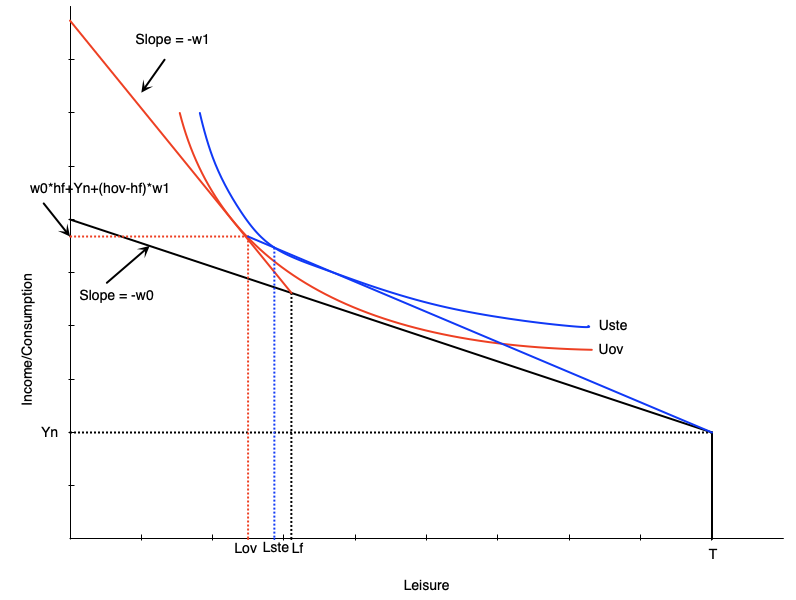
Straight-time equivalent work is depicted to the left
The blue line goes from the fixed hours point with slope \(w_{1}\)
- Generates the equivalent income as overtime pay at the optimum
Worker chooses fewer work hours than overtime
- Due to income effect of having higher wage at all work hours
Summary
Summary
We have explored the labour-leisure model for labour supply
The model is based on utility maximization subject to a budget constraint
The model can explain both participation and work hours decisions
Changes in non-labour income and the wage affect work decisions
The labour supply curve can be backward bending
The model can be used to analyze various situations faced by workers
- Added worker effects
- Discouraged workers
- Moonlighting
- Overtime
Next chapter we will analyze government policy within this model